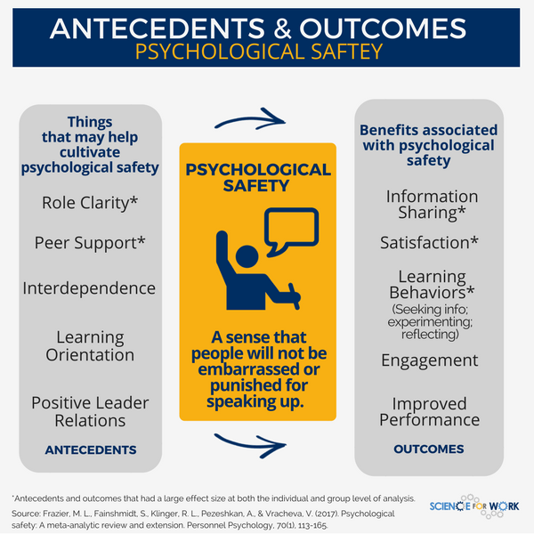

4 Code of Conduct
A Code of Conduct is a set of basic ground rules that we ask team members to follow. The goal is to create an open and inclusive space for our work that helps us achieve our collective goals. Along with our Big Picture, the Code of Conduct
- provides a benchmark for self-evaluation
- helps define our identity
- establishes behavioral guidelines
We expect all team members to adhere to the policies and guidelines outlined here, as well as those found in the AFSC Code of Conduct.
The FMA Analytical Services Program is dedicated to providing a harassment-free experience for everyone, regardless of gender, gender identity and expression, sexual orientation, disability, physical appearance, body size, age, race, or religion. We do not tolerate harassment of team members or others in our larger communities in any form.
This code of conduct applies to all A-Team spaces, including group and individual meetings (face to face and remote), workshops, email correspondence, chat and web channels, and code repositories. Anyone who violates this code of conduct may be sanctioned and referred to the AFSC’s policies.
Managing Conflict
To promote healthy resolutions to conflict, build trust, and develop a sense of psychological safety on th A-Team, all members of the Analytical Services Program are expected to:
Delay entering into conversations when feelings are “elevated” (i.e., high level of frustration, anger, upset, etc.)
- Why? Anger impacts the way you process information. Other emotions can have negative impacts on communication as well.
- What to do
- If you are angry, do not confront the person until you are able to have a rational conversation where you are open to hearing them and can actively listen.
- If you are confronted by a person who is angry or upset
- Do not to become defensive
- Politely request to delay the conversation
- Follow-up when emotions have settled
- Do not to become defensive
- If you are angry, do not confront the person until you are able to have a rational conversation where you are open to hearing them and can actively listen.
- Why? Anger impacts the way you process information. Other emotions can have negative impacts on communication as well.
Always assume positive intent of others. If your initial response is negative, try to change your viewpoint and find a positive explanation.
Recognize the humanity in yourself and others. This means:
How to have an uncomfortable conversation
Feedback
Feedback is meant to change outcomes. Feedback can be either reinforcing, i.e., it reinforces behaviors or actions that lead to outcomes we want, or redirecting, i.e., it outlines behaviors or actions that lead to unwanted outcomes and provides alternative behaviors or actions that lead to desired outcomes.
Giving and receiving redirecting feedback can be difficult. However, if we don’t get feedback, we can’t see our own blind-spots. If we don’t provide constructive ways for others to improve, then we can’t expect them to improve and we can’t expect to have our own needs met.
Healthy, productive teams have members who give each other six (6) or more reinforcing feedback comments for every redirecting feedback comment.
Reward your colleagues for good work and deeds. Here’s some ways to recognize them.
Simon Sinek has some great advice for how to give difficult feedback (watch at least to the 6:10 mark; but the whole clip is worthwhile).
Effective communication skills are like muscles, we need to exercise them. You can’t go to the gym for 9 hours and expect to be in shape. But if you go for 30 minutes a day, every day, you will eventually get in shape. Similarly, the first time you try to give or receive feedback in a new way, it might go badly. But eventually it will get better and easier - but never easy.
Not having a conversation because it will be hard is not an excuse for not having a conversation. Difficult conversations avoided today become tomorrow’s even more difficult conversation.
This resource from UBC outlines best practices for giving and receiving feedback.
How to Create a Culture of Feedback
Psychological Safety
What is Psychological Safety?
All members of Analytical Services (including the Program Manager) are expected to conform to a set of behavioral norms that are designed to make the workplace a psychologically and physically safe space.
A norm is a rule that guides behavior toward the usual, typical, and/or standard behavior of a group.
A psychologically safe space is:
“a climate in which people are comfortable expressing and being themselves.” – Amy Edmondson, The Fearless Organization
In practice, this means that people feel comfortable taking risks, being themselves, speaking their minds, and being openly vulnerable in front of co-workers. The ability to be vulnerable in a workplace is directly related to the consequences that individuals feel they might be subject to if they are openly vulnerable.
In a double-blind research study of teams, Google found that the most important feature of highly effective teams was the presence of psychological safety.

Why Do We Need Psychological Safety in the Workplace?
Evidence shows that creating a psychologically safe workplace is strongly linked with highly effective teams1 which are more likely to share ideas, give and welcome feedback, experiment, and discuss mistakes openly1,2. Psychologically safe workplaces are linked to higher employee satisfaction2

Both images above are from Science for Work.
How Do We Create Psychological Safety in the Workplace?
To promote psychological safety, we can:
- Develop self-awareness so that you can adjust your emotional responses and learn to react in a way that invites open discussion.
- Demonstrate concern for other team members as people so that they feel comfortable speaking up and showing up as their whole selves.
- Ask questions, show appreciation for other’s ideas, and suspend judgement.
- Engage in positive dialog to inspire honest conversations.
- Own up to our mistakes and share learnings from failures.
See also the resources for Psychological Safety and Wellness
Reporting Harassment
If you are being harassed by a member of the FMA A-Team, notice that someone else is being harassed, or have any other concerns, please contact the FMA Analytical Services Program Manager, Dr. Jason Jannot, at jason.jannot@noaa.gov. If you do not feel comfortable reporting to Jason, please contact Jennifer Ferdinand (FMA Division Director) or Lisa Thompson (FMA Deputy Director) or any other AFSC supervisor. Other methods of reporting available to you include:
- NOAA Sexual Assault Sexual Harassment Helpline
- NOAA Workplace Violence Prevention and Response Program
- NOAA Workforce Management Office
- NOAA Office of Inclusion and Civil Rights
In addition to the AFSC’s Code of Conduct, the Dec. 8th 2022 Policy Statement on Equal Employment Opportunity from NOAA provides a good explanation of NOAA’s stance and policies against harassment, discrimination, and violence in the workplace.
Drug Free Workplace
A drug-free workplace is a condition of employment for all federal employees to refrain from using illegal drugs on or off-duty.